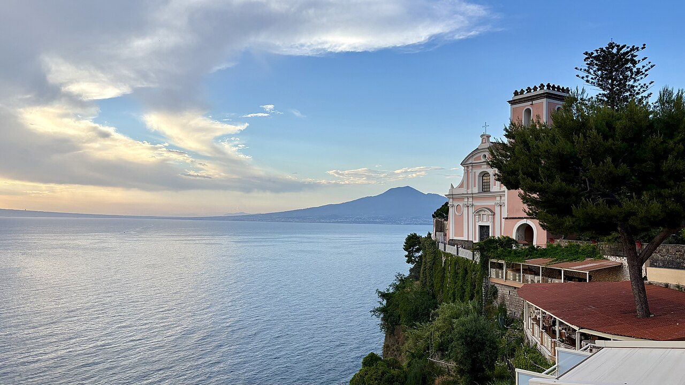

Un soggiorno con radici · XVI secolo
Il tempo
rallenta.
Il viaggio
comincia.
Una dimora storica a Vico Equense, restaurata per accogliere. Due camere, ciascuna con bagno privato, aria condizionata e Wi-Fi; fuori, la penisola sorrentina da esplorare.
Informazioni basate sulla presentazione pubblica del B&B Stella.
Dimora del XVI secoloDue camereVico Equense · Napoli
XVI
La casa
Una struttura antica,
restaurata per accoglierti.
Il sito descrive una dimora del XVI secolo recentemente ristrutturata. Il concept propone di far vedere subito cosa la distingue, per poi accompagnare l’ospite dalle camere alle informazioni utili per organizzare il viaggio.
Il punto di partenza
Quattro mete.
Un solo soggiorno.
Capri, Sorrento, Pompei e Napoli sono le mete che il B&B segnala come raggiungibili da Vico Equense. Una sezione collegamenti chiara aiuta a pianificare la visita e rimanda a orari e percorsi aggiornati.
Consulta i collegamenti ↗
Organizza il tuo soggiorno
Le informazioni ufficiali sono a un clic.
Consulta il sito del B&B per disponibilità e dettagli aggiornati.